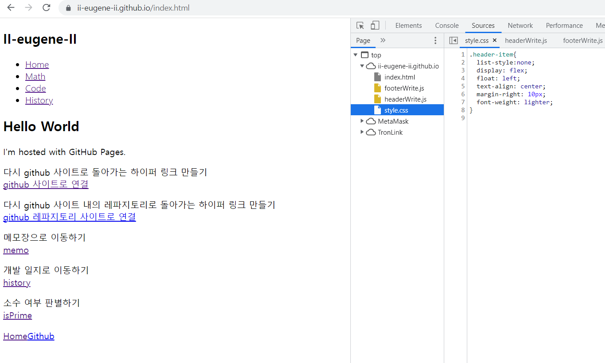
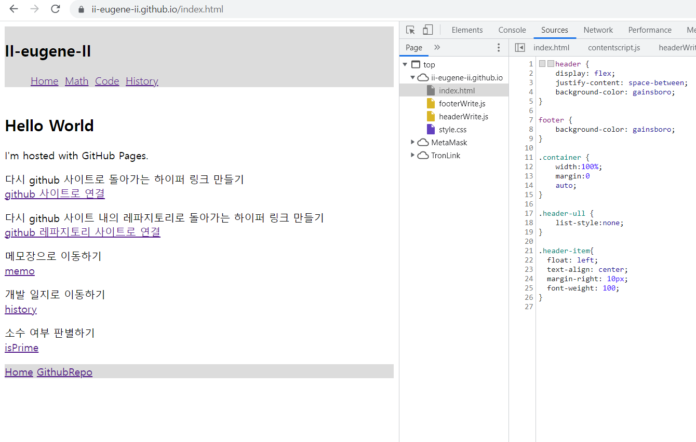
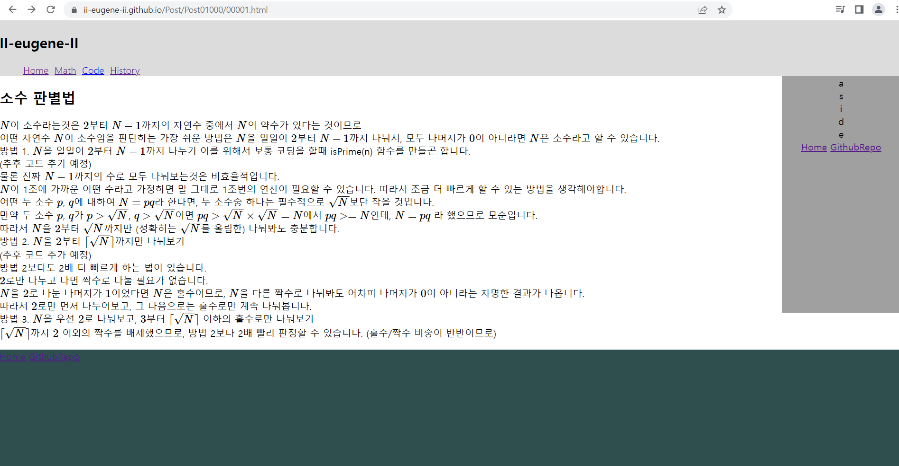

개발 일지
다시 메인 페이지로 돌아가기 home
2022년 7월
7월 31일
기존에 홀로 있던 메인페이지에 개발 일지 페이지와 시험용 메모장 페이지 개설
2022년 8월
8월 01일

소수 판별기 추가

소수 판별기 작동 전 모습입니다.
CSS로 조금 꾸며서 기본적인 딱딱한 버튼 대신 조금 부드러워 보이는 모습입니다. 그럼에도 home 버튼은 확실히 꾸며야겠다는 생각이 듭니다.

소수 판별기 작동 후 모습입니다.
어떤 수를 입력하면 소수 여부를 띄워주고, 계산 시간이 얼마나 걸렸는지 알려줍니다. (사용자 기기별로 상이함)

합성수를 입력했을 때 모습입니다.
가장 작은 소인수를 보여줍니다.
8월 02일

헤더를 만들어보았습니다.
원래는 header.html 파일로 분리해서 더 편하게 만들고 싶었는데 html은 html을 직접적으로는 불러올 수 없다고 합니다. (자바스크립트니...제이쿼리니...그런걸 사용해야만...)
그래서 온갖 방법을 검색하고 그대로 따라해봤지만 진짜 단 하나도 성공하지 못해서 그냥 index.html 파일에 직접 입력했습니다.
(약 3시간 후...)

현존하는 모든 방법중에 제일 기괴한 방식으로 어떻게든 만드는데에 성공했습니다.
장기적으로는 저 기괴한 방식을 가능한 현대적인 방식으로 만드는 것을 시도해야겠습니다.
또한 저 방식으로 할 때, a태그의 경우 그냥 따옴표를 쓰면 오류가 발생하므로 (("~~" link "~~") 같은 상태여서) 꼭 문자열 안에서는 \"로 사용해주도록 합니다.
내일은 1. 헤더 부분의 math 부분을 채우거나 2. CSS로 헤더를 꾸며보는 일을 해봐야겠습니다.
8월 03일
8월 3일자 개발 일지부터는 접기 기능을 추가하여 조금 더 간단하게 원하는 부분만 볼 수 있도록 해봅니다.

헤더의 각 요소에 클래스를 설정해주었습니다.
헤더의 글씨 두께를 단지 얇게 설정했을 뿐인데 생각보다 괜찮은 모습입니다.

허나 각 요소 (Home, Math...)를 가로로 정렬하는데에는 실패했습니다. 수평 정렬하게 해준다는 CSS 코드를 다 널어봤는데 실패한 모습입니다.

우선 ul 태그와 li 태그 전체를 쪼개는 방법으로 해보았지만 이 방법 대로라면 앞으로 header를 제외하면 ul과 li 태그를 쓰는게 매우 껄끄러워지는 상황이 될 것입니다.
class 를 지정한 위치를 바꿔보았더니 성공합니다.
잘 생각해보면 기존에는 li 박스 안의 a 태그에 class 를 지정했습니다.
li 박스 안에서 a태그를 두세개 넣으면 그 a 태그들이 수평으로 연결되는 방식이었던 셈입니다.
제가 하고 싶었던 것은 li 박스를 수평으로 연결 시키고 싶었으니 li 태그에 class를 넣는것이 맞습니다.
물론 그럼에도 아직 h1 태그로 만든 Hello World가 희한하게 오른쪽에 붙어있는 모습입니다.

그냥 Hello World 앞에 br 태그를 붙여서 강제로 줄바꿈 효과를 만들어줍니다.
또한 footer를 만들어보았습니다.
허나 일반적인 글과 잘 구분이 되지 않으므로 내일은 footer를 구분하는 일을 해보아야겠습니다. (header는 그래도 조금 구분된 감이 없지 않아 있는데...)
전날 해야겠다고 생각했던 일과 합치면 내일은 1. 헤더 부분의 math 부분 글을 쓰거나 2. footer를 구분해보는 일을 해봐야겠습니다.
8월 04일
8월 4일자 개발 일지부터는 사진이 너무 크므로 height를 400으로 제한하여 올려봅니다.
header의 CSS 코드에 조금 추가를 해보았습니다.
저 부분에 display flex 같은 속성을 추가해주었더니 전날 발생했던 Hello World 타이틀이 헤더 옆으로 가는 현상을 막아주었습니다. (분명히 더 유연해지는 코드라고 했는데 왜 되는지는 잘 모르겠습니다...)
(찾아보니 justify-content space-between 부분이 알아서 공간을 잘 맞춰주는 그런 역할을 한다고 합니다.)
header와 footer가 확실히 구분되게는 해보았지만 헤더 부분이 아무래도 이상합니다. container Class에 width 1270px을 먹인것이 문제인듯 합니다.

container Class에 width 100%를 먹여줍니다.
이제 어떤 화면 크기로 보든 header가 꽉 차있는 모습을 보여줄 것입니다. 일종의 반응형 웹 만들기...를 시작한 셈입니다
그러고 보니 footer가 공중에 붕 떠있는 모습이 보기에 별로 좋지는 않습니다.
분명히 본문을 wrapper로 감싸고 저렇게 CSS 코드를 짜면 바닥에 붙는다고 검색결과 나왔었는데 역시나 안되는 모습입니다.
다른 방식으로 본문을 wrapper로 감싸고 footer까지 감싸는 all-wrapper를 만들고 그걸 가지고 하면 나온다고 검색결과가 나왔지만 이번엔 헤더가 떠버립니다.

거기다가 스크롤을 잘 굴리면 저렇게 아예 박살나버리는 상황이 옵니다.
우선 다 없던 일로 하고 footer 관련 id를 다 지워줍니다.
본문 콘텐츠가 적어 footer가 띄워진다면 footer 크기를 아주 크게 키워서 아무튼 어쨌든 바닥에 닿도록 처리해줍니다.
footer에 아주 많은 컨텐츠를 담아야 할 듯 합니다. 원래는 header를 꾸미려 했는데 우선 방대한 footer에 무엇인가를 채워야겠습니다.
전날 해야겠다고 생각했던 일과 합치면 내일은 1. 헤더 부분의 math 부분 글을 쓰거나 2. footer에 컨텐츠를 채우는 일을 해봐야겠습니다.
8월 05일
8월 5일자 개발 일지부터는 개발 일지부터는 사진 height를 500으로 바꿔봅니다. (사진이 깨지는 감이 있어서...)

아무리 그래도 450px이나 되는 footer는 너무 큰 듯 합니다.

아예 header부터 footer까지 전부 wrap으로 감싸고 min-height를 100vh로 하니까 되는 모습입니다.
vh는 %와는 다르게 부모가 아닌 뷰포트를 기준으로 한 단위라고 소개되어있습니다. 대략 다른 요소와는 관계없이 보는 사람 화면에 알아서 맞춰준다는 뜻으로 이해하면 될 듯 합니다.
명색이 블로그인데 블로그의 내용도 채워보도록 해줍니다.
github에서 마크다운 문서의 경우 달러 표시 두개로 감싼 것은 모두 수식이 되었었는데 전혀 되질 않는 모습입니다.
HTML(Hyper Text Markup Language)은 마크업 입니다.
다음과 같은 JS 코드를 넣어주면 잘 동작하는 모습을 보여줍니다.

글마다 저 몇줄짜리 기다란걸 쓰고 있을걸 생각하니 막막해집니다.
header, footer를 만드는 JS코드를 썼던 것처럼 그냥 (((LaTex를 인식)하게 하는 JS코드)를 쓰는 JS코드)를 만들어서 분리 시켜줍니다.
이 블로그에서 처음으로 자바스크립트 프로그램 만든게 소수 판별기 이므로 소수 판별법에 관한 글을 쓰기로 합니다.
소수는 우선 크게 정수론 아래에 있으니 정수론 안에 넣어주고, 소수에 관련한 이야기도 엄청 많으니 소수 카테고리를 만들어줍니다.
정수론 카테고리 안에 또 소수 카테고리를 만든 셈입니다.
이제 지금 고민은 앞으로 블로그에 쓰는 콘텐츠들을 어떻게 배치할까의 고민입니다.
Math/NumberTheory/Prime/PrimarityTest.html 형식으로 폴더 안의 폴더 안에... 처리한다면 보기에는 예쁘지만
나중에 정수론을 포괄하는 또 다른 폴더를 만들게 된다면 모든 a태그 주소를 다 바꿔줘야 하는 끔찍한 상황에 빠집니다.
Post/Post00001-00100/00001.html 형식으로 따로 포스트만 들어가는 폴더를 만든다면 나중에 처리하기엔 예쁘지만
딱히 보기는 그닥 예쁘진 않는 그런 상황이 펼쳐집니다.
이 부분에 대해서는 고민해봐야겠습니다.
전날 해야겠다고 생각했던 일과 합치면 내일은 1. math 폴더 형식을 정하고 2. 그 안에 콘텐츠를 넣고 3. footer에 컨텐츠를 채우는 일을 해봐야겠습니다.
8월 06일
 YTN 에서는 기사를 다음과 같이 처리합니다.
YTN 에서는 기사를 다음과 같이 처리합니다.
첫 0108은 날씨에 붙은 코드인듯 하고, (과학기사는 0105) 2022년 08월 06일 16시 09분에 올라온...당일의 526655번 기사로 보입니다.
따라서 전날에 했던 글 분류를 어떻게 할 것인가의 고민은 그냥 post/00001.html 형식으로 만드는걸로 했습니다.
 다른 글 쓰기 전에 먼저 aside 부터 우선은 만들고 가기로 했습니다.
다른 글 쓰기 전에 먼저 aside 부터 우선은 만들고 가기로 했습니다.
글 100개 썼는데 그때서야 aside 만들고 그거 하나하나 쓰고 있을 생각하면 막막합니다.
우선 aside에 무얼 채울지 감이 안와서 그대로 놔둬줍니다. (저 사진 이후 home과 githubRepo만 임시로 채워줍니다.)
전날 해야겠다고 생각했던 일과 합치면 내일은 1. math 카테고리에 글 쓰기 2. footer에 컨텐츠를 채우는 일과 3. aside에 컨텐츠를 채우는 일을 해봐야겠습니다.
8월 10일

블로그답게 드디어 첫 글을 써넣어봤습니다.
다른 사이트들 aside도 생각보다는 넓어서 더 확장했습니다.
첫 글을 쓰고나니 우선 고칠 부분이 많이 보입니다.
우선 줄 간격도 조금 넓혀야 할 듯 하고 글씨체도...
미적으로 아주 조예가 깊진 않지만 무언가 '저건 아니다' 라는 감각이 느껴집니다.
아무래도 내일은 적합한 글씨체 찾는 것도 알아봐야 할 듯 합니다.
8월 16일

details 태그를 확실히 구분할 수 있도록 태그를 둘러싸는 테두리를 만들어주었습니다.

우선 맨 위의 소수판별법 제외하고 아직 쓰지 읺은 글들 입니다. 이렇게 미리 쓸 글 목록을 깔아놔야 글을 지속적으로 쓸 생각이 생길듯 합니다.
8월 18일
마치 고전적 웹에서 볼 것 같은 밑줄 있는 a태그 대신 테두리로 둘러싼 a태그를 만들어줍니다. (그렇다고 또 최신식 웹으로 보이진 않습니다...)
그냥 a태그를 둘러싸는 테두리를 만들면 무조건 칸을 삐져나와서 진짜 보기 안좋으나, a태그에 display: inline-block 속성을 먹여주자 칸을 잘 차지하는 모습입니다.
여기서 a태그를 꾸미는 방법은 간단히 알았으니 더더욱 꾸미는 그런 것들은 추후에 하기로 합니다.
또한, section(본문) 부분에 margin: 10px 속성을 먹여줘서 기존의 화면 왼쪽에 딱 붙는 그런 상황을 피하게 되었습니다.
8월 19일
원래는 a태그를 감싸는 이중 테두리를 만들어주었으나, 뭔가 좀 큰 부피를 차지한다는 느낌을 적지 않게 받았습니다.
우연히 다른 블로그를 보다가 링크에 파란 점선 밑줄을 달아준 것을 보고, 저렇게 꾸미는게 조금 더 a태그 스럽다는 느낌을 받고 border-bottom 에 dashed 3px blue 속성을 먹여주었습니다.
8월 XX일